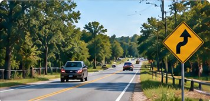
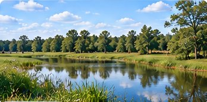
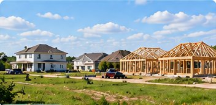
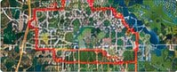

Roads & Safety
- Data:
- Crash · Severity · Traffic · Speed
- Maps:
- Road Network · Corridors · Intersections · Community Plan Boundary
- Records:
- Projects · Studies · Agency Responses
- Policies:
- Gunn Highway · Road Configuration · Lighting
Evidence
Browse data, maps, public records, and policies for each key issue in Keystone–Odessa.



Evidence Library
Example record details are illustrative and will be verified before publication.
The website uses this document to: Show the adopted Keystone–Odessa Community Plan and countywide comprehensive plan policies.
Related to
The website uses this document to: Confirm that no new update has been requested by the Board of County Commissioners and provide information on financial records.
Related to
The website uses this document to: Provide records related to water infrastructure, drainage issues, and monitoring in the Keystone–Odessa area.
Related to
The website uses this document to: Show 806 construction/repair records and application dates.
Related to

The website uses this document to: Show 7,191 records analyzed, including 1,626 Known, 1,210 Likely, and 251 Somewhat Likely Septic.
Related to
From evidence to action
You’ve seen the issues, the evidence, and the plan. Now you can take action to support a safer, healthier, and stronger future for Keystone–Odessa.